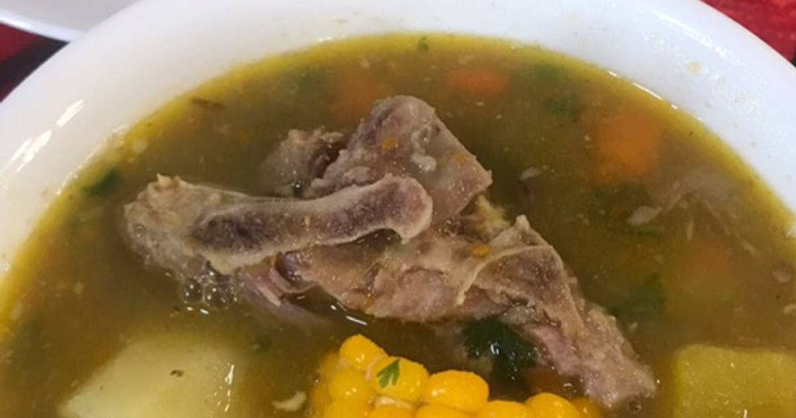

Backbone soup: Poor man's banquet

Ingredients
- Cow's backbone, half a kilo.
- Vegetable oil.
- Two large onions, any kind.
- 1 garlic clove.
- A bouillon cube diluted on a liter of water, or a liter of beef/veggies broth.
- Any vegetables you'd like to eat boiled. The original recipe uses just potatos and carrots, but in case you can, we recommend you use more veggies. Adjust quantity according to your pot's capacity.
- Paprika, a tablespoon.
- Salt and ground black pepper, up to taste.
- Optionally, 50 to 100 grams of rice.
- Optionally, Worcestershire Sauce.
Steps
- Chop the vegetables; it's easier if you do it now.
- Pour some oil on a pot, heat it up. Condiment the backbone pieces with salt and pepper, sear them in the pot, then take them out and set them apart for later.
- Without turning off the fire and taking advantage of the meat flavored oil we just cooked, throw the vegetables in the pot and sauté them with the paprika. This is when you add the Worcestershire Sauce, up to taste. Stir occasionally to prevent sticking.
- When the vegetables are done, deglaze with the bouillon cube diluted on the liter of water/the broth chosen. Then add the backbone pieces to the soup. This is when you add the rice, in case you'll use it.
- Keep over medium heat until the broth in the soup has a consistency you like. Serve while it's hot!.
Go back Home